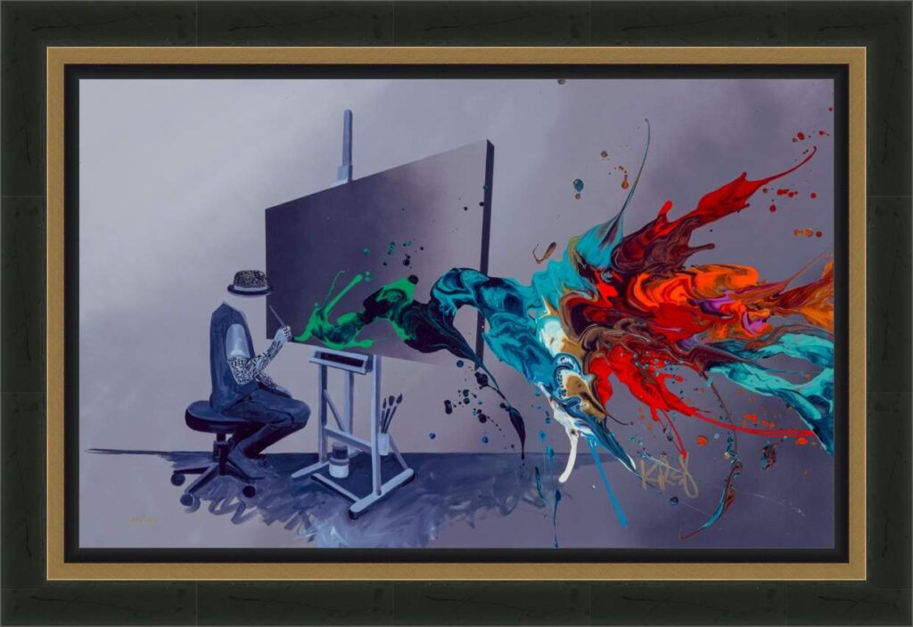

Becoming Timeless
by Kre8

Description:
In “Becoming Timeless,” Kevin “Kre8” Vigil offers a profound meta-commentary on the legacy of the artist. This piece captures the very moment of creation, depicting Kre8’s signature faceless figure seated at an easel, working to bridge the gap between the physical world and the eternal.
The composition is a masterclass in the artist’s philosophy of “Kre8tizm.” The artist figure and his studio are rendered in grayscale, representing the structured, finite nature of our physical reality. However, springing from the canvas is a magnificent, chaotic explosion of color—swirls of cyan, red, and orange that defy gravity and form. This vibrant “splash” represents the soul and energy of the art itself.
The title, “Becoming Timeless,” suggests that while the creator is mortal (represented by the grey), the work they leave behind is immortal. The energy bursting from the easel flows outward, suggesting that true art cannot be contained by a canvas; it spills out into the world, outlasting the hand that painted it.
Artwork Details:
- Medium: Giclée on Canvas with Hand Embellishment / Mixed Media (Archives may vary)
- Style: Abstract Surrealism / Urban Pop / “Kre8tizm”
- Key Elements: Faceless painter at easel, grayscale studio vs. color explosion, tattooed figure
- Signature: Hand-signed by the artist (Bottom Right)